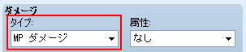
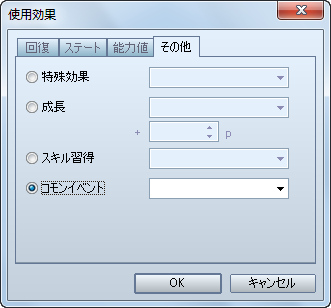

VX Ace では、一つ一つのスキル（アイテム）ごとにダメージ計算式を設定出来るようになり、様々なパラメーターを手軽に計算式に盛り込むことが出来るようになりました。ですが、［簡単設定］は設定項目が VX と同じ（「精神関係度」が「魔法関係度」に名称変更されています）ですので、これを使えば VX と同じ計算式を設定することが可能です。
なお、VX Ace では「魔法防御」という新たなパラメーターが加わっていますので、魔法（VX では精神）関連スキルの計算式が VX とは若干異なります。VXとまったく同じようにしたい場合は、次のようにしてください。
これで、VX とまったく同じ計算式になります。ただし、この計算式では「魔法防御」が一切関係なくなっていますので、関係させたい場合は手順 3 は行わず、手順 1 と 2 のみを行うと良いでしょう。
回復アイテムに設定する「回復効果」ですが、VX Ace ではスキルにも設定出来るようになりました。
［スキル / アイテム］使用効果 − 回復

スキル（アイテム）の命中判定を通常攻撃と同じにしたい場合の設定方法です。
［スキル / アイテム］発動 − 命中タイプ − 物理攻撃

ダメージを与える対象を HP ではなく MP にしたい場合の設定方法です。
［スキル / アイテム］ダメージ − タイプ − MP ダメージ

ダメージを与えると同時に使用者が回復するようにしたい場合の設定方法です。
［スキル / アイテム］ダメージ − タイプ − HP 吸収 / MP 吸収

対象者の防御力や魔法防御（VX では精神力）を無視してダメージを与えるスキル（アイテム）を作成する場合の設定方法です。
［スキル / アイテム］ダメージ − 簡単設定 − ［対象者の防御力を無視する］をチェック

| 攻撃方法 | 通常の計算式 | 防御力無視の計算式 |
| 通常攻撃 | a.atk * 4 - b.def * 2 | a.atk * 4 |
| ファイア | 150 + a.mat * 2 - b.mdf * 2 | 150 + a.mat * 2 |
対象者にステートを付加したり、対象者のステートを解除したりする場合の設定方法です。
［スキル / アイテム］使用効果 − ステート − ステート付加 / ステート解除

スキル（アイテム）使用後にコモンイベントを呼び出す方法です。
［スキル / アイテム］使用効果 − その他 − コモンイベント

アクターの能力値を上昇させるスキル（アイテム）を作成したい場合の設定方法です。
［スキル / アイテム］使用効果 − その他 − 成長

スキル（アイテム）によって対象の攻撃力や防御力といった能力値を強化したり、弱体化したりする場合、VX ではステートを使いましたが、VX Ace ではステートを使わずに設定出来るようになりました。
［スキル / アイテム］使用効果 − 能力値 − 能力強化 / 能力弱体